Autoencoder, LSTM RUL 예측, NASA Turbofan 통합 실습
참고 교재: Hands-On Unsupervised Learning Using Python (Ankur A. Patel, O'Reilly)
시간 배분: 문제 제기 3분 + 이론 13분 + 시연 10분 + 실습 19분
상황: 공장에서 수만 개의 정상 제품이 생산되는 동안 불량은 몇 개뿐입니다. 이 불량에는 라벨이 붙어 있지 않습니다. 작업자가 미처 발견하지 못했거나, 아직 고장이 나지 않은 상태이기 때문입니다.
[현실적인 제조 데이터의 모습]
정상 데이터: ████████████████████████████ 수만 건 (라벨 있음)
이상 데이터: █ 수십 건 (라벨 없음 or 불확실)지도학습으로 해결하려면:
핵심 질문: 라벨 없이, 정상 데이터만 가지고 이상을 찾을 수 있을까?
핵심 아이디어: 정상만 보고 학습한 모델은 이상을 제대로 재현하지 못한다
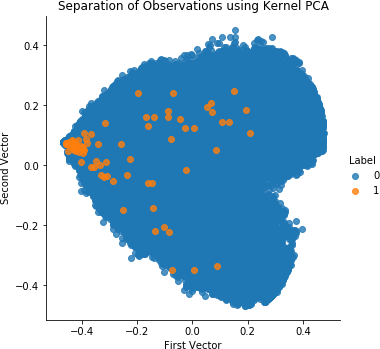
라벨 없이 데이터 자체의 구조를 학습합니다.
[지도학습 vs 비지도학습]
지도학습: 입력 -> 모델 -> 예측값 (정답 라벨로 학습)
비지도학습: 입력 -> 모델 -> 구조/표현 (데이터 자체로 학습)
비지도학습이 답하는 질문:
"이 데이터는 어떤 구조를 가지고 있는가?"
"이 샘플은 다른 샘플들과 얼마나 다른가?"이상탐지에서의 비지도 학습 전략:
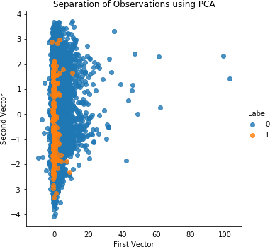
Autoencoder는 압축(Encoder) - 복원(Decoder)을 학습하는 신경망입니다.
[Autoencoder 구조]
입력 x 잠재 표현 z 재구성 x-hat
(원본 데이터) (압축된 표현) (복원된 데이터)
[64차원] -> Encoder -> [8차원] -> Decoder -> [64차원]
x z x-hat
학습 목표: x와 x-hat의 차이(재구성 오차)를 최소화
Loss = ||x - x-hat||^2 (MSE)이상탐지에 활용하는 원리:
정상 데이터로만 학습:
정상 입력 -> Encoder -> 정상 패턴의 잠재 표현 -> Decoder -> 잘 복원됨
재구성 오차 낮음
이상 데이터 투입:
이상 입력 -> Encoder -> 정상 패턴으로 억지로 표현 -> Decoder -> 복원 실패
재구성 오차 높음
결론: 재구성 오차 = 이상 점수PyTorch Autoencoder 기본 구현:
import torch
import torch.nn as nn
class Autoencoder(nn.Module):
def __init__(self, input_dim=64, latent_dim=8):
super().__init__()
self.encoder = nn.Sequential(
nn.Linear(input_dim, 32),
nn.ReLU(),
nn.Linear(32, latent_dim)
)
self.decoder = nn.Sequential(
nn.Linear(latent_dim, 32),
nn.ReLU(),
nn.Linear(32, input_dim)
)
def forward(self, x):
z = self.encoder(x)
return self.decoder(z)nn.Sequential(...): 층들을 순서대로 묶어 주는 컨테이너latent_dim=8: 잠재 공간의 차원. 이 숫자가 작을수록 압축이 강해지고 이상 탐지에 유리forward(x): 모델에 x를 넣으면 자동으로 호출되는 메서드재구성 오차 계산:
def reconstruction_error(model, x):
x_hat = model(x)
return ((x - x_hat) ** 2).mean(dim=1) # 샘플별 MSE(x - x_hat) ** 2: 샘플마다, 각 특징마다 오차의 제곱.mean(dim=1): 특징 방향으로 평균. 샘플 하나당 숫자 하나 = 이상 점수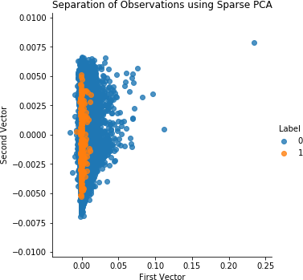
모델을 학습했다고 끝이 아닙니다. 임계값을 어떻게 정하느냐가 실무의 핵심입니다.
[정상 데이터의 재구성 오차 분포]
빈도
| ████
| ██████
| █████████
| ███████████
| ██████████████....
└──────────────┬──────── 재구성 오차
|
임계값 T
T보다 낮은 오차 -> 정상
T보다 높은 오차 -> 이상임계값 설정 방법 3가지:
방법 1. 백분위수 기반 (가장 흔함)
T = 정상 데이터 재구성 오차의 95th percentile
-> "정상 샘플의 5%는 이상으로 오탐되는 것을 허용"
방법 2. 평균 + k x 표준편차
T = mu + 3sigma (3-sigma rule)
-> 정규분포를 가정할 때 유효
방법 3. 도메인 전문가 설정
"재구성 오차 0.05 이상이면 작업자에게 알림"
-> 실무에서 최종 조정은 항상 사람이 함트레이드오프 정리:
| 임계값 설정 | 민감도 | 오탐율 | 적용 사례 |
|---|---|---|---|
| T 낮게 | 이상을 더 많이 잡음 | 정상을 이상으로 오탐 (현장 피로도 증가) | 안전 직결 설비 |
| T 높게 | 실제 이상 놓칠 수 있음 | 알림이 울리면 진짜 이상 | 단순 품질 검사 |
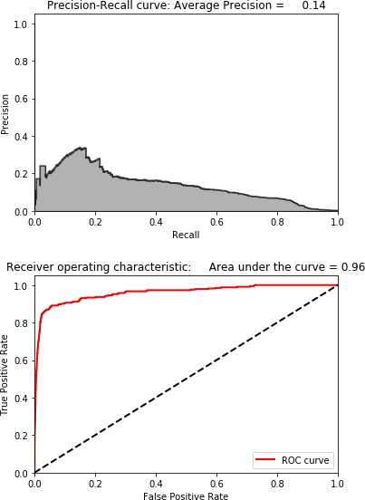
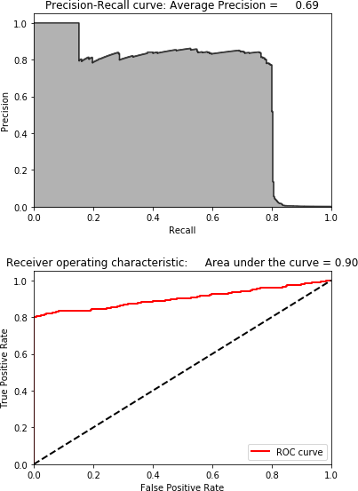
PCA와 Autoencoder의 관계: PCA는 선형 Autoencoder의 특수한 형태입니다. Autoencoder가 비선형 활성화 함수를 사용하면 PCA보다 복잡한 패턴을 학습할 수 있습니다.
PCA는 데이터의 분산을 최대화하는 축을 찾고, Autoencoder는 재구성 오차를 최소화하는 잠재 표현을 학습합니다. 결과적으로 유사한 목적이지만 Autoencoder가 더 표현력이 높습니다.
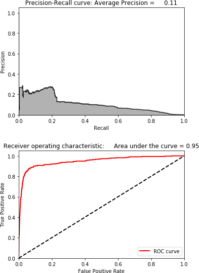
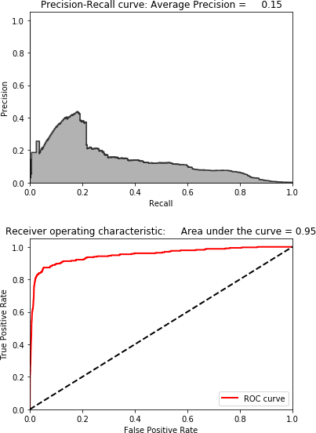
Autoencoder 구조 설계보다 재구성 오차가 실제로 이상 신호를 잡는지 확인하는 과정에 집중하세요.
Claude에게 던질 프롬프트:
제조 진동 데이터 이상탐지용 Autoencoder를 만들어줘.
- 정상 데이터: 사인파 기반 합성 신호 (1000개)
- 이상 데이터: 노이즈가 추가된 신호 (50개, 학습에는 사용 안 함)
- PyTorch로 Autoencoder 구현 (input_dim=64, latent_dim=8)
- 정상 데이터로만 학습 (epoch=50)
- 결과: 정상/이상 재구성 오차 분포를 겹쳐서 시각화
- 95th percentile 임계값 표시시연 흐름:
과제: latent_dim을 바꿔가며 정상/이상 분리도를 비교하세요.
| 실험 | latent_dim | 관찰 포인트 |
|---|---|---|
| A | 32 | 압축이 거의 없음 - 이상도 잘 복원? |
| B | 16 | 기준선 |
| C | 8 | 강의 시연과 동일 |
| D | 4 | 강한 압축 - 분리도 변화? |
분리도 측정:
# 정상과 이상의 재구성 오차 분포가 얼마나 겹치는지 확인
threshold = np.percentile(normal_errors, 95)
recall = (anomaly_errors > threshold).mean()
print(f"latent_dim={{latent_dim}}, 이상 탐지율: {{recall:.2%}}")제출 항목:
실습 시작 코드:
import numpy as np
import torch
import torch.nn as nn
import matplotlib.pyplot as plt
np.random.seed(42)
t = np.linspace(0, 1, 64)
# 정상 데이터: 사인파 (약간의 노이즈 포함)
normal_data = np.array([
np.sin(2 * np.pi * 5 * t) + 0.05 * np.random.randn(64)
for _ in range(1000)
], dtype=np.float32)
# 이상 데이터: 강한 노이즈
anomaly_data = np.array([
np.sin(2 * np.pi * 5 * t) + 0.5 * np.random.randn(64)
for _ in range(50)
], dtype=np.float32)
class Autoencoder(nn.Module):
def __init__(self, input_dim=64, latent_dim=8):
super().__init__()
self.encoder = nn.Sequential(
nn.Linear(input_dim, 32), nn.ReLU(),
nn.Linear(32, latent_dim)
)
self.decoder = nn.Sequential(
nn.Linear(latent_dim, 32), nn.ReLU(),
nn.Linear(32, input_dim)
)
def forward(self, x):
return self.decoder(self.encoder(x))
def train_and_evaluate(latent_dim, normal_data, anomaly_data, epochs=50):
# TODO: 모델 생성 -> 학습 -> 오차 계산 -> 분리도 평가
pass
for latent_dim in [32, 16, 8, 4]:
train_and_evaluate(latent_dim, normal_data, anomaly_data)
참고 교재: Deep Learning with Python, 2nd Ed. (Francois Chollet, Manning)
시간 배분: 문제 제기 3분 + 이론 13분 + 시연 10분 + 실습 19분
RUL (Remaining Useful Life): 지금부터 설비가 고장날 때까지 남은 사이클(또는 시간)
[설비 유지보수 전략 3가지]
1. 사후보전 (Reactive Maintenance)
고장 -> 수리
비용: 최대 (긴급 수리 + 생산 중단)
위험: 최대 (안전사고 가능)
2. 예방보전 (Preventive Maintenance)
일정 주기(예: 매 30일)마다 교체
비용: 중간 (멀쩡한 부품도 교체)
위험: 낮음
3. 예지보전 (Predictive Maintenance) <- 목표
RUL 예측 기반으로 교체 시점 결정
비용: 최소 (필요한 시점에 정확하게 교체)
위험: 최저RUL의 정의:
엔진이 총 300 사이클 후 고장난다면:
사이클 1: RUL = 299
사이클 100: RUL = 200
사이클 250: RUL = 50 <- 이 시점에 교체 결정
사이클 300: RUL = 0 <- 고장핵심 질문: 현재 센서 데이터만 보고 RUL을 예측할 수 있을까?
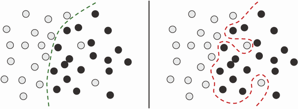
RUL 예측은 결국 숫자를 맞추는 회귀(Regression) 문제입니다. 그런데 왜 선형 회귀나 일반 신경망(MLP)으로는 부족할까요?
[문제: 순서가 중요한 데이터]
센서 값만 보면:
사이클 50: 온도=520, 압력=14.6, 진동=0.02 -> RUL = ?
사이클 250: 온도=521, 압력=14.7, 진동=0.02 -> RUL = ?
두 샘플의 순간 값이 거의 같아도 RUL은 전혀 다름
-> "지금 값"이 아니라 "값이 변해온 패턴"이 중요
MLP: 각 샘플을 독립적으로 처리 -> 순서 정보 무시
LSTM: 이전 상태를 기억하며 처리 -> 변화 패턴 학습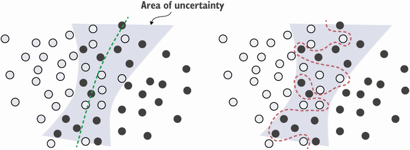
LSTM(Long Short-Term Memory)은 "무엇을 기억하고, 무엇을 버릴지"를 학습하는 순환 신경망입니다.
[LSTM 셀의 직관적 이해]
일반 RNN의 문제:
먼 과거 정보가 현재에 영향을 못 줌 (기울기 소실)
LSTM의 해결책: 게이트 3개
입력 게이트: "새 정보를 얼마나 받아들일까?"
망각 게이트: "과거 정보를 얼마나 잊을까?"
출력 게이트: "지금 무엇을 내보낼까?"
엔진 마모 예시:
초반 사이클: 망각 게이트 -> 정상 패턴 유지
마모 진행중: 입력 게이트 -> 온도 상승 패턴 축적
말기 사이클: 출력 게이트 -> "RUL이 낮다"는 신호 출력시퀀스 입력 구조 (슬라이딩 윈도우):
window_size=30 사이클:
사이클 1~30 -> [센서값 30x14] -> LSTM -> RUL 예측값
사이클 2~31 -> [센서값 30x14] -> LSTM -> RUL 예측값
사이클 3~32 -> [센서값 30x14] -> LSTM -> RUL 예측값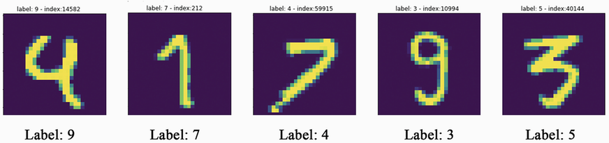
Keras LSTM 모델:
import tensorflow as tf
model = tf.keras.Sequential([
tf.keras.layers.LSTM(64, input_shape=(30, 14),
return_sequences=False),
tf.keras.layers.Dropout(0.2),
tf.keras.layers.Dense(32, activation='relu'),
tf.keras.layers.Dense(1)
])
model.compile(optimizer='adam', loss='mse', metrics=['mae'])input_shape=(30, 14): 30개 사이클 동안 14개 센서값return_sequences=False: 마지막 순간의 출력만 반환Dense(1): 활성화 없음. 회귀에서는 숫자를 그대로 출력compile(...): MSE 손실 + MAE 지표제조 센서 데이터는 노이즈가 많고 샘플 수가 제한적이라 과적합 위험이 높습니다.
[과적합이 발생하는 신호]
학습 손실: ......... (계속 감소)
검증 손실: .....^^^^^ (어느 순간 다시 상승)
|
이 시점이 최적Dropout: 학습 중 뉴런의 일부를 랜덤하게 끄는 기법
Early Stopping: 검증 손실이 개선되지 않으면 학습을 자동으로 멈춤
early_stopping = tf.keras.callbacks.EarlyStopping(
monitor='val_loss',
patience=10,
restore_best_weights=True
)
model.fit(
X_train, y_train,
validation_split=0.2,
epochs=200,
callbacks=[early_stopping]
)patience=10: 10 epoch 동안 개선 없으면 중단restore_best_weights=True: 최고 성능 시점의 가중치 복원validation_split=0.2: 학습 데이터의 20%를 검증용으로 분리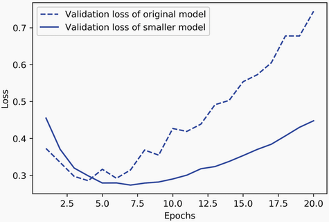
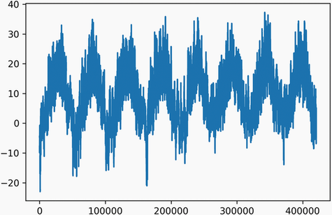
심화: 표현 학습(Representation Learning)
딥러닝의 핵심은 데이터를 더 나은 "표현(representation)"으로 변환하는 것입니다. 각 층이 점점 더 추상적인 특징을 학습합니다:
이런 "자동 특징 추출"이 딥러닝을 전통 ML과 구분하는 핵심입니다. 전통 ML에서는 도메인 전문가가 직접 특징을 설계해야 했지만, 딥러닝은 데이터로부터 특징을 자동 학습합니다.
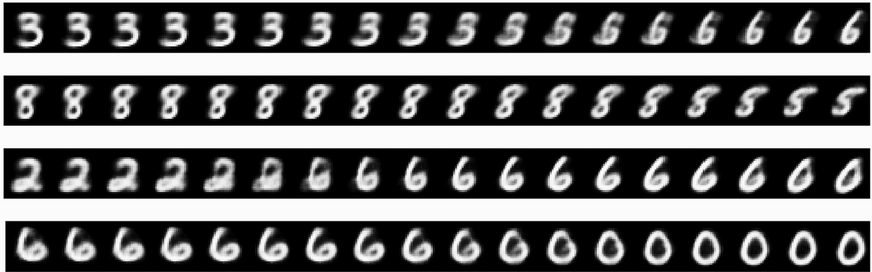
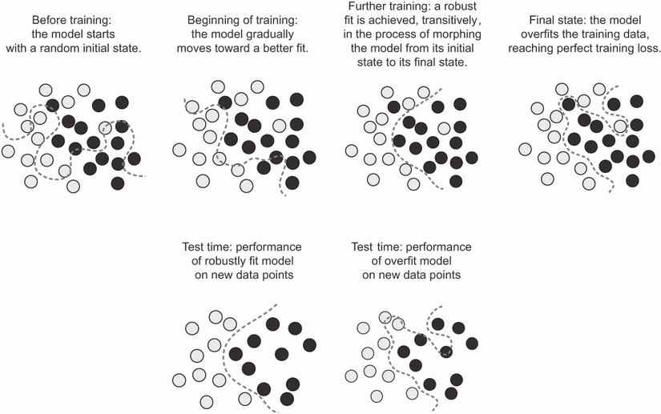
모델 구현보다 학습 곡선과 예측 결과 해석에 집중하세요.
Claude에게 던질 프롬프트:
NASA Turbofan FD001 데이터로 LSTM 기반 RUL 예측 모델을 만들어줘.
- 데이터 로드 및 RUL 라벨 생성 (clip 125)
- window_size=30, 센서 14개 사용
- LSTM(64) -> Dropout(0.2) -> Dense(32) -> Dense(1)
- Early Stopping (patience=10)
- 결과 시각화 2개:
1. 학습/검증 손실 곡선
2. 실제 RUL vs 예측 RUL 산점도 (대각선 기준선 포함)시연 후 추가 질문:
"RMSE는 낮은데 실제로 조기경보가 잘 안 될 수 있는 이유가 뭐야? Scoring Function이라는 비대칭 평가 지표는 왜 필요한 거야?"
시연 흐름:
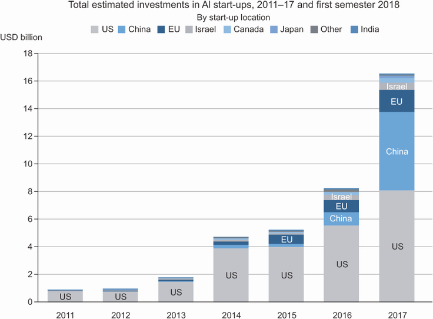
과제: LSTM 레이어 수와 Dropout 비율 조합을 바꿔보며 과적합과 성능의 트레이드오프를 분석하세요.
| 실험 | LSTM 레이어 | Dropout | 예상 결과 |
|---|---|---|---|
| A | 1개 | 0.0 | 기준선 (과적합 가능) |
| B | 1개 | 0.2 | Dropout 효과 확인 |
| C | 2개 | 0.0 | 복잡한 모델 (과적합↑) |
| D | 2개 | 0.2 | 복잡 + 정규화 |
제출 항목:
실습 시작 코드 - Step 1: 데이터 로드:
import numpy as np
import pandas as pd
import tensorflow as tf
import matplotlib.pyplot as plt
cols = ['unit', 'cycle', 'op1', 'op2', 'op3'] + [f's{{i}}' for i in range(1, 22)]
train_df = pd.read_csv('train_FD001.txt', sep=' ', header=None, names=cols)
train_df = train_df.dropna(axis=1)Step 2: RUL 라벨 만들기 (클리핑 포함):
max_cycle = train_df.groupby('unit')['cycle'].max()
train_df = train_df.merge(max_cycle.rename('max_cycle'), on='unit')
train_df['RUL'] = (train_df['max_cycle'] - train_df['cycle']).clip(upper=125)Step 3: 슬라이딩 윈도우 시퀀스 생성:
sensor_cols = ['s2','s3','s4','s7','s8','s9','s11','s12',
's13','s14','s15','s17','s20','s21']
def create_sequences(df, sensor_cols, window_size=30):
X, y = [], []
for unit in df['unit'].unique():
unit_data = df[df['unit'] == unit][sensor_cols].values
unit_rul = df[df['unit'] == unit]['RUL'].values
for i in range(len(unit_data) - window_size):
X.append(unit_data[i:i+window_size])
y.append(unit_rul[i+window_size])
return np.array(X, dtype=np.float32), np.array(y, dtype=np.float32)
X, y = create_sequences(train_df, sensor_cols)Step 4: 정규화 (Min-Max Scaling):
from sklearn.preprocessing import MinMaxScaler
scaler = MinMaxScaler()
X_reshaped = X.reshape(-1, len(sensor_cols))
X_scaled = scaler.fit_transform(X_reshaped).reshape(X.shape)
split = int(len(X_scaled) * 0.8)
X_train, X_val = X_scaled[:split], X_scaled[split:]
y_train, y_val = y[:split], y[split:]Step 5: LSTM 4가지 설정으로 실험:
results = {{}}
for n_layers, dropout_rate in [(1, 0.0), (1, 0.2), (2, 0.0), (2, 0.2)]:
# TODO: 모델 구성 -> 학습 -> RMSE 계산
passStep 6: 결과 비교 시각화 - 4가지 설정의 학습 곡선과 RMSE를 한눈에 비교
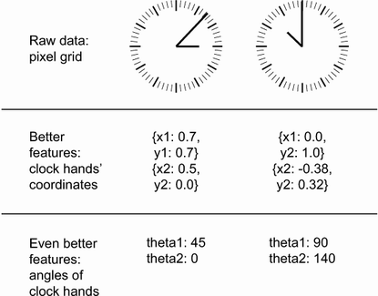
참고 교재: Machine Learning for Time-Series with Python (Ben Auffarth, Packt)
시간 배분: 데이터 확인+라벨 설계 10분 + 모델링+평가 15분 + 자유 실습 25분
NASA Turbofan Engine Degradation 데이터셋 소개:
[데이터셋 구성]
FD001: 단일 운전 조건, 단일 고장 모드 <- 이번 실습 주 데이터
FD002: 6가지 운전 조건, 단일 고장 모드
FD003: 단일 운전 조건, 2가지 고장 모드
FD004: 6가지 운전 조건, 2가지 고장 모드
각 파일 구조:
열: unit번호 | 사이클 | 운전조건 3개 | 센서값 21개
행: 각 유닛의 사이클별 측정값
train: 고장 시점까지의 전체 이력
test: 고장 전 일부 구간 (RUL을 맞춰야 함)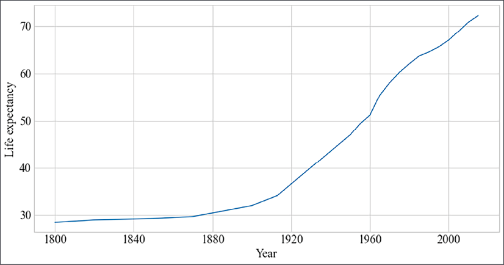
Claude로 EDA 요청:
NASA Turbofan FD001 train 데이터를 탐색해줘.
1. 기본 정보: shape, 결측치, 유닛 수, 사이클 범위
2. 센서별 시계열 플롯 (유닛 1개 선택, 센서 21개를 4x6 subplot)
3. 변동이 거의 없는 센서 식별 (std < 0.01인 센서)
4. 유닛별 수명(max cycle) 분포 히스토그램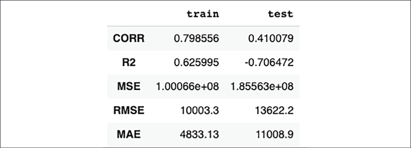
클리핑이 필요한 이유:
실제 RUL 분포 (클리핑 전):
엔진 초반 구간에서 RUL = 250, 300, 350...
이 구간의 센서 데이터는 사실상 모두 "정상"으로 동일
-> 모델이 초반 구간을 구분하는 데 불필요한 에너지 낭비
클리핑 후 (max=125):
RUL > 125인 구간은 모두 125로 고정
-> "남은 수명이 125 이하인 구간"만 정밀하게 학습
-> 실무적으로 의미 있는 예측 범위에 집중RUL 라벨 생성 코드:
# RUL 라벨 생성 + 클리핑
max_cycle = train_df.groupby('unit')['cycle'].max().reset_index()
max_cycle.columns = ['unit', 'max_cycle']
train_df = train_df.merge(max_cycle, on='unit')
train_df['RUL'] = (train_df['max_cycle'] - train_df['cycle']).clip(upper=125)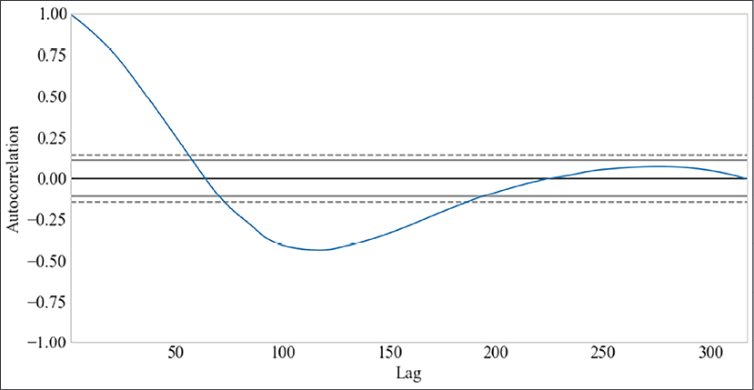
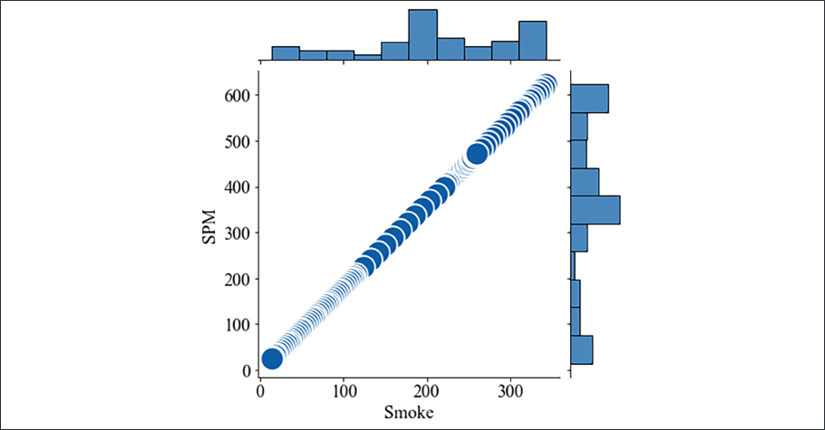
심화: 시계열 정상성 검정 (Stationarity Test)
시계열 분석에서 "정상성(stationarity)"은 통계적 특성이 시간에 따라 변하지 않음을 의미합니다. 센서 데이터가 정상적이지 않으면 모델이 안정적으로 학습하기 어렵습니다.
NASA Turbofan의 대부분의 센서는 엔진 마모가 진행됨에 따라 추세(trend)를 보이므로 비정상적입니다. 이것이 슬라이딩 윈도우 + LSTM 접근이 유리한 이유입니다.
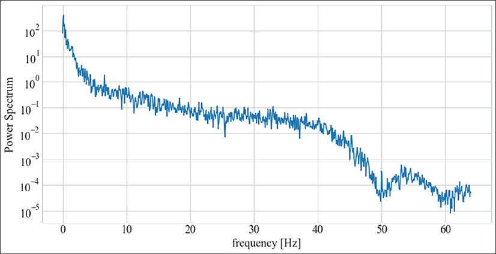
섹션 2에서 만든 LSTM 구조를 Turbofan 데이터에 적용합니다.
# 2층 LSTM + Dropout
model = tf.keras.Sequential([
tf.keras.layers.LSTM(64, input_shape=(30, 14),
return_sequences=True),
tf.keras.layers.Dropout(0.2),
tf.keras.layers.LSTM(32),
tf.keras.layers.Dropout(0.2),
tf.keras.layers.Dense(32, activation='relu'),
tf.keras.layers.Dense(1)
])
early_stop = tf.keras.callbacks.EarlyStopping(
monitor='val_loss', patience=10, restore_best_weights=True
)
history = model.fit(
X_train, y_train,
validation_split=0.2,
epochs=100, batch_size=256,
callbacks=[early_stop], verbose=1
)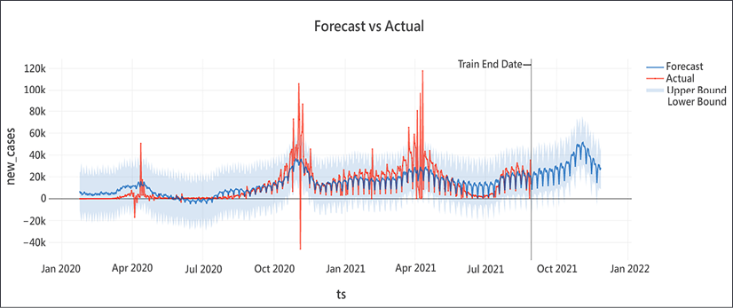
RMSE의 한계: 조기 예측 오차와 지연 예측 오차를 동일하게 취급
실제 RUL=10, 예측 RUL=20 (조기 경보: 10 사이클 일찍 교체)
-> 비용: 교체 비용만 발생
실제 RUL=10, 예측 RUL=0 (지연 경보: 10 사이클 늦게 알림)
-> 비용: 설비 고장 + 생산 중단 + 안전사고NASA Scoring Function (비대칭 평가):
import numpy as np
def nasa_score(y_true, y_pred):
d = y_pred - y_true
score = np.where(
d < 0, # 음수 = 지연 예측 (더 위험)
np.exp(-d / 13) - 1, # 지연: 페널티 급격히 증가
np.exp(d / 10) - 1 # 조기: 페널티 완만하게 증가
)
return np.sum(score)
y_pred = model.predict(X_val).flatten()
rmse = np.sqrt(np.mean((y_val - y_pred) ** 2))
score = nasa_score(y_val, y_pred)
print(f"RMSE: {{rmse:.2f}}")
print(f"NASA Score: {{score:.2f}} (낮을수록 좋음)")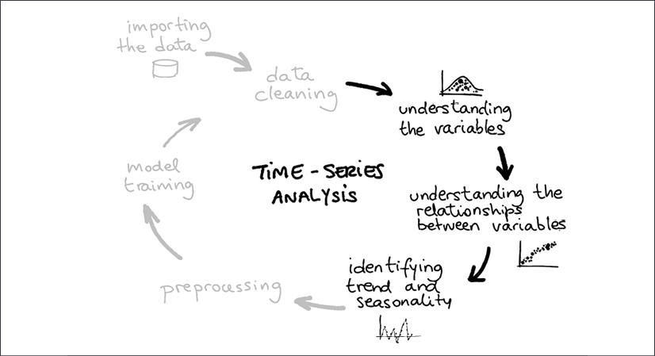
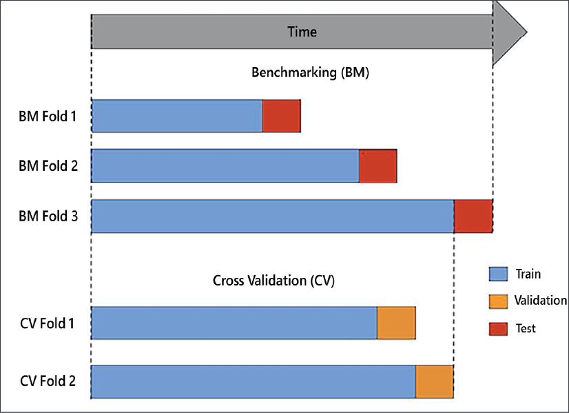
심화: 특징 공학 (Feature Engineering)
시계열 데이터에서 유용한 특징:
LSTM이 자동으로 이런 특징을 학습하지만, 명시적으로 추가하면 적은 데이터로도 성능 향상이 가능합니다.
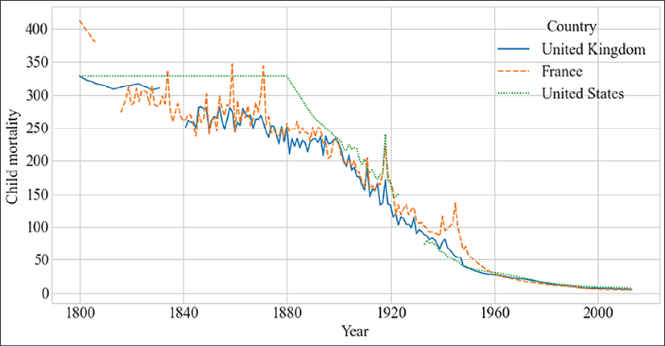
기본 - FD001 단일 학습 및 평가:
제출: RMSE와 NASA Score 숫자 + 산점도 이미지
중급 - FD001 vs FD002 비교 (운전 조건 일반화):
제출: FD001 학습 -> FD001 평가 vs FD002 평가 비교 표
심화 - Autoencoder + LSTM 통합 파이프라인:
파이프라인 구조:
센서 데이터
|
[Autoencoder] -> 재구성 오차 계산
|
재구성 오차 > 임계값? -> Yes -> 이상 경보 발생
| No
[LSTM] -> RUL 예측
|
RUL < 30? -> 교체 권고구현 순서:
제출: 파이프라인 흐름도 + 주요 구간에서의 이상 점수 + RUL 예측값
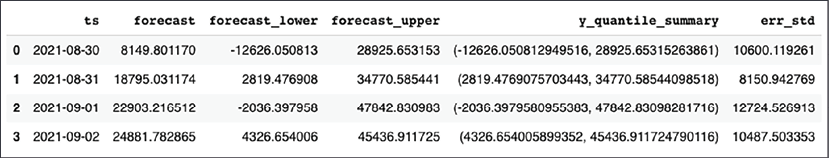
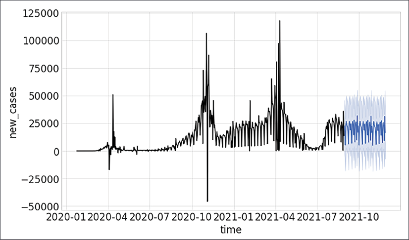
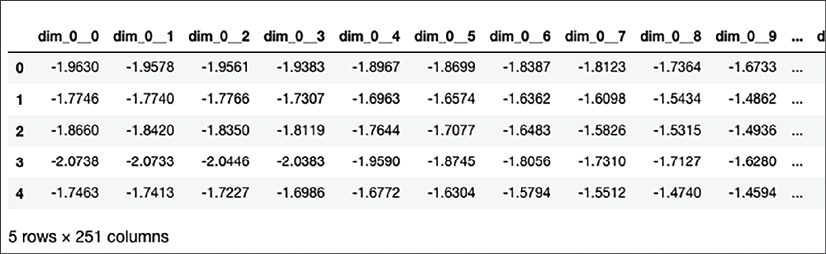
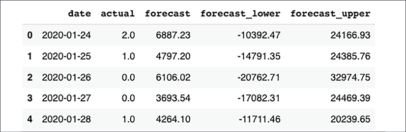
Autoencoder 변형 비교:
| 종류 | 핵심 아이디어 | 이상탐지에서의 장점 |
|---|---|---|
| Vanilla AE | 기본 압축-복원 | 구현 단순, 기준선 |
| Sparse AE | 잠재 표현에 희소성 제약 | 더 선명한 특징 분리 |
| Denoising AE | 노이즈 입력 -> 원본 복원 학습 | 노이즈에 강건한 정상 표현 |
| VAE | 잠재 공간을 확률 분포로 학습 | 이상 점수에 불확실성 포함 |
| LSTM-AE | 시계열 입력의 Autoencoder | 시간 패턴 이상 탐지에 최적 |
Deep SVDD (Support Vector Data Description):
Autoencoder가 "재구성 오차"로 이상을 판단한다면, Deep SVDD는 "정상 데이터를 하나의 구에 가둔다"는 아이디어입니다.
def svdd_loss(z, center, radius, nu=0.1):
dist = torch.sum((z - center) ** 2, dim=1)
loss = radius ** 2 + (1 / nu) * torch.mean(
torch.clamp(dist - radius ** 2, min=0)
)
return lossRNN 계열 모델 비교:
| 모델 | 파라미터 수 | 학습 속도 | 장기 의존성 | RUL 예측 적합도 |
|---|---|---|---|---|
| Simple RNN | 적음 | 빠름 | 약함 | 짧은 시퀀스만 |
| LSTM | 많음 | 느림 | 강함 | 표준 선택 |
| GRU | 중간 | 중간 | 강함 | LSTM 대안 (더 단순) |
| Bidirectional LSTM | 2배 | 느림 | 양방향 | 배치 예측에 효과적 |
| Conv1D + LSTM | 중간 | 빠름 | 강함 | 지역+전역 패턴 동시 |
Keras Functional API: 복잡한 모델 설계:
inputs = tf.keras.Input(shape=(30, 14))
x = tf.keras.layers.LSTM(64, return_sequences=True)(inputs)
x = tf.keras.layers.Dropout(0.2)(x)
x = tf.keras.layers.LSTM(32)(x)
# 다중 출력: RUL 예측 + 이상 점수 동시 출력
rul_output = tf.keras.layers.Dense(1, name='rul')(x)
anomaly_output = tf.keras.layers.Dense(1, activation='sigmoid',
name='anomaly')(x)
model = tf.keras.Model(inputs=inputs,
outputs=[rul_output, anomaly_output])
model.compile(
optimizer='adam',
loss={{'rul': 'mse', 'anomaly': 'binary_crossentropy'}},
loss_weights={{'rul': 1.0, 'anomaly': 0.5}}
)불확실성 정량화: MC Dropout:
def predict_with_uncertainty(model, X, n_iter=100):
predictions = np.array([
model(X, training=True).numpy()
for _ in range(n_iter)
])
mean_pred = predictions.mean(axis=0)
std_pred = predictions.std(axis=0)
return mean_pred, std_pred
mean, std = predict_with_uncertainty(model, X_test)
# RUL 예측값 +- 2sigma 범위로 신뢰 구간 시각화 가능도메인 적응 (Domain Adaptation): FD001 -> FD002:
# 해결책 1: 운전 조건별 정규화
for op_condition in df['op_condition'].unique():
mask = df['op_condition'] == op_condition
df.loc[mask, sensor_cols] = scaler.fit_transform(
df.loc[mask, sensor_cols]
)
# 해결책 2: 운전 조건을 모델 입력에 포함
sensor_input = tf.keras.Input(shape=(30, 14))
op_input = tf.keras.Input(shape=(3,))
lstm_out = tf.keras.layers.LSTM(64)(sensor_input)
combined = tf.keras.layers.Concatenate()([lstm_out, op_input])
output = tf.keras.layers.Dense(1)(combined)온라인/스트리밍 RUL 예측:
from collections import deque
class OnlineRULPredictor:
def __init__(self, model, window_size=30, n_sensors=14):
self.model = model
self.window = deque(maxlen=window_size)
def update(self, new_sensor_values):
self.window.append(new_sensor_values)
def predict(self):
if len(self.window) < self.window_size:
return None
X = np.array(self.window)[np.newaxis, ...]
return self.model.predict(X)[0, 0]
# 사용 예시
predictor = OnlineRULPredictor(model)
for new_data in streaming_sensor_data:
predictor.update(new_data)
rul = predictor.predict()
if rul is not None and rul < 30:
send_alert(f"경고: 잔여 수명 {{rul:.1f}} 사이클")비지도 이상탐지 (1~2주) - Hands-On Unsupervised Learning Using Python:
| 순서 | 챕터 | 핵심 내용 |
|---|---|---|
| 1 | Ch.1 | 비지도 학습 전체 지형도 |
| 2 | Ch.3 | Dimensionality Reduction (PCA 등) |
| 3 | Ch.4 | Anomaly Detection |
| 4 | Ch.7 / Ch.8 | Autoencoders (Vanilla, Sparse, Denoising) |
딥러닝 시계열 (2주) - Deep Learning with Python, 2nd Ed.:
| 순서 | 챕터 | 핵심 내용 |
|---|---|---|
| 1 | Ch.1 | 딥러닝 개요, 표현 학습 |
| 2 | Ch.4 | 과적합 원인, 정규화 전략 |
| 3 | Ch.10 | RNN, LSTM, GRU, Conv1D |
| 4 | Ch.7 | Functional API, 복잡한 모델 설계 |
통합 실습 심화 (2주) - ML for Time-Series with Python:
| 순서 | 챕터 | 핵심 내용 |
|---|---|---|
| 1 | Ch.2 | 시계열 EDA, 정상성 검정 |
| 2 | Ch.3 | 전처리, 슬라이딩 윈도우, 특징 공학 |
| 3 | Ch.7 | LSTM 분류/회귀 심화 |
| 4 | Ch.9 | 확률적 모델, 온라인 이상탐지 |